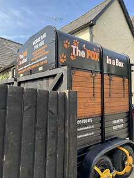

Trade Mark Journal No.2025/027 4 July 2025
UK00004224776 26 June 2025 (32,33)

- Class 32
- Non-alcoholic drinks; Cola drinks; Juice drinks; Carbonated non-alcoholic drinks; Non-alcoholic fruit drinks; Fruit drinks; Energy drinks; Soft drinks; Colas [soft drinks]; Non-alcoholic beverages; Beverages (Non-alcoholic -); Non-carbonated soft drinks; Cordials (non-alcoholic beverages); Carbonated soft drinks; Fruit-flavored soft drinks; Low-calorie soft drinks; Non-alcoholic sparkling fruit juice drinks; Non-alcoholic carbonated beverages; Fruit juice drinks; Fruit flavoured drinks; Fruit flavored drinks; Cocktails, non-alcoholic; Non-alcoholic cocktails; Fruit flavoured carbonated drinks; Fruit beverages (non-alcoholic); Beer-based beverages; Syrups used in the preparation of soft drinks; Syrups for making fruit-flavored drinks; Fruit-flavoured beverages; Non-alcoholic fruit cocktails; Fruit juice beverages (Non-alcoholic -); Non-alcoholic fruit juice beverages; Fruit-based beverages; Syrups for making soft drinks; Fruit-flavored beverages; Non-alcoholic syrups for making beverages; Syrups for making non-alcoholic beverages; Fruit flavored soft drinks; Syrups for beverages; Apple juice drinks; Squashes [non-alcoholic beverages]; Energy drinks containing caffeine; Non-alcoholic flavored carbonated beverages; Orange juice drinks; Non-alcoholic beers; Non-alcoholic beer-based cocktails; Beer; Non-alcoholic beer; Beers; Low-alcohol beer; Craft beer; Ginger beer; Flavored beer; Wheat beer; Non-alcoholic beer flavored beverages; Craft beers; Alcohol-free beers; Lager; Flavored beers; Flavoured beers; Low alcohol beer; Bitter [Beers]; Ale; Lagers; Non-alcoholic wine; Cider, non-alcoholic; Ginger ale; Ales; Alcohol free wine; Alcohol free cider; Non-alcoholic wines; Non-alcoholic fruit vinegar beverages.
- Class 33
- Wine-based drinks; Alcoholic fruit cocktail drinks; Rum-based beverages; Low alcoholic drinks; Cordials [alcoholic beverages]; Alcoholic beverages except beers; Alcoholic beverages (except beers); Alcoholic beverages [except beers]; Alcoholic carbonated beverages, except beer; Wine-based beverages; Alcoholic beverages, except beer; Alcoholic beverages (except beer); Beverages (Alcoholic -), except beer; Spirits [beverages]; Pre-mixed alcoholic beverages; Alcoholic cocktails; Pre-mixed alcoholic beverages, other than beer-based; Alcoholic beverages of fruit; Alcoholic fruit beverages; Cocktails.
The Fox & Hounds Bumpstead Ltd